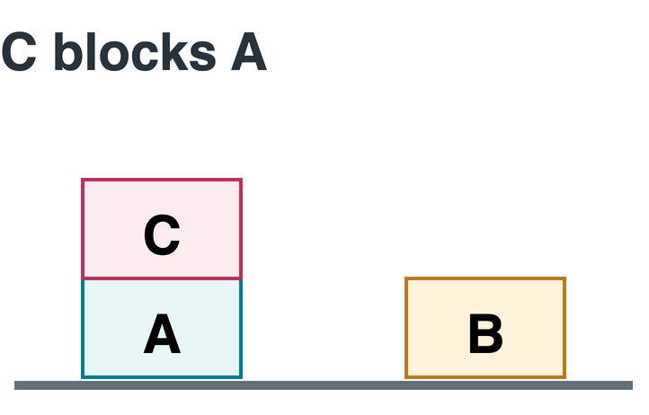
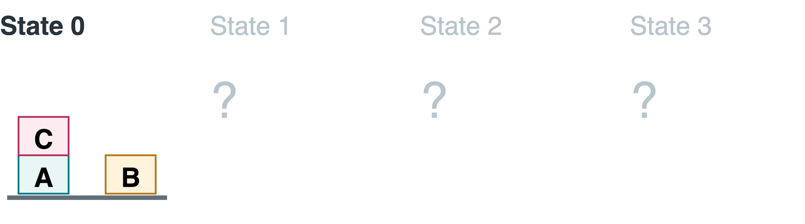
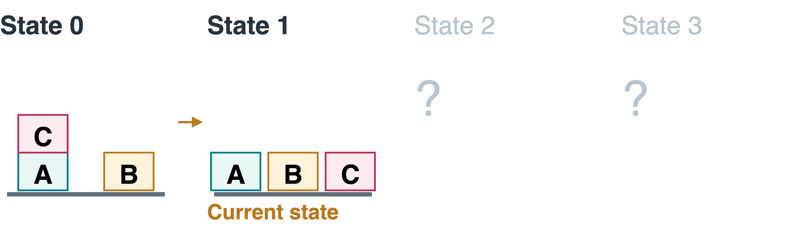
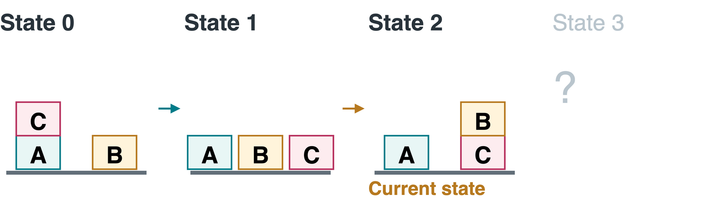
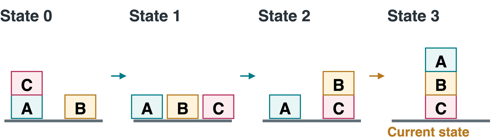

CS 463G & CS 663
(Intro to) AI
Lecture 19: Planning
Fall 2026
A Planning Task
Planning finds an action sequence from an initial state (starting arrangement) to a goal (required final conditions).

Can we put A onto B immediately? What must happen first?
C blocks A. A plan must first make A movable.
Classical Planning Assumptions
Our planner uses a deliberately simplified model:
| Assumption | Meaning in this example |
|---|---|
| Fully observable | The current arrangement is known |
| Deterministic | A legal move has one predicted result |
| Static environment | Blocks stay put unless the agent moves them |
| Finite, discrete states | Finitely many distinct arrangements, described by true/false facts |
| Sequential actions | One complete move at a time |
A classical plan is a fixed action sequence. Unexpected outcomes may require replanning: computing a new plan from the observed state.
Action Schemas and Ground Actions
Objects are named things in the problem: blocks A,B,C and \text{Table}.
An action schema is a reusable action description. A template means it has variables as placeholders, like blanks in a form.
| Form | Example | Meaning |
|---|---|---|
| Action schema | \text{Move}(b,\text{src},\text{dst}) | Move block b from source \text{src} onto destination \text{dst} |
| Ground action | \text{Move}(B,\text{Table},C) | Move B from the table onto C |
Grounding fills the placeholders: b=B, \text{src}=\text{Table}, \text{dst}=C.
A ground action has specific objects in every slot, with no variables left. The schema also defines when the action is allowed and what it changes.
Planning searches over states. Each legal ground action supplies one edge. The chosen objects must still meet the action’s requirements.
Blocks-World Vocabulary
A constant names one object: A,B,C or \text{Table}. A predicate describes a property or relation, such as \text{Clear} or \text{On}.
| Fact | Meaning |
|---|---|
| \text{Block}(A) | A has type (object category) block; this never changes |
| \text{On}(C,A) | C rests directly on A |
| \text{On}(B,\text{Table}) | B rests on the table |
| \text{Clear}(B) | No block is on top of B |
For blocks, Clear means an empty top. \text{Clear}(\text{Table}) is a special, always-true convention: the table can accept several blocks.
The Complete Initial State
A state s is the set of facts currently true in the world.
Where blocks rest:
\begin{aligned} &\text{On}(A,\text{Table}),\quad\text{On}(B,\text{Table}),\\ &\text{On}(C,A). \end{aligned}
Clear facts: \text{Clear}(B),\text{Clear}(C).
Fixed facts: \text{Block}(A),\text{Block}(B),\text{Block}(C) and \text{Clear}(\text{Table}).

Closed-world assumption: facts absent from this complete state are false. In particular, \text{Clear}(A)=\text{false}.
A Partial Goal
A partial goal specifies only the facts we require at the end.
G=\{\text{On}(A,B),\ \text{On}(B,C)\}
The symbol G names the set of required goal facts.
| Required | Left unspecified by G |
|---|---|
| A directly on B | What C rests on |
| B directly on C | Other facts and additional objects |
The goal test G\subseteq s means every fact in G is in state s. Extra true facts are allowed. Both required facts must hold together.
Preconditions and Effects
Preconditions say when an action is allowed. Effects say what it changes.
| Set | Role |
|---|---|
| \text{Pre}(a), or PRE | Preconditions: facts required before action a |
| \text{Add}(a), or ADD | Add effects: facts made true |
| \text{Del}(a), or DELETE | Delete effects: facts removed, hence made false |
An action is applicable (executable now) when \text{Pre}(a)\subseteq s. Its next state is:
\text{Result}(s,a)=\bigl(s\setminus\text{Del}(a)\bigr)\cup\text{Add}(a).
Here \setminus removes facts and \cup combines fact sets.
The frame problem asks how to represent unchanged facts. Facts outside the effect sets persist: moving C leaves \text{On}(B,\text{Table}) true.
Maintaining the Clear Facts
For a block b, \text{Clear}(b) means no block x rests on b:
\neg\exists x\,\text{On}(x,b).
We store this summary as a fact and update it after each move.
| A move changes… | Clear fact to update |
|---|---|
| The old supporting block loses its top block | Add \text{Clear}(\text{src}) |
| The destination block gains a top block | Delete \text{Clear}(\text{dst}) |
| The moving block’s own top | Nothing: it remains clear |
The initial state and action effects must keep these summary facts consistent with the arrangement.
Moving Onto a Block
b and \text{dst} are distinct blocks. \text{src} is a block or Table, different from both.
Example: \text{Move}(B,\text{Table},C) puts B onto C.
Why must the schema delete \text{Clear}(C)?
B now occupies C’s top. Leaving \text{Clear}(C) true would allow an impossible second block to move onto C.
Moving Onto the Table
b and \text{src} are distinct blocks. The table is a constant, not a block.
No occupied-top check or delete effect is needed for the table. It has space for multiple blocks in this model.
Grounding an Action
Use the same replacements in every rule: b=C and \text{src}=A.
\text{MoveToTable}(b,\text{src})\quad\leadsto\quad\text{MoveToTable}(C,A).
| Grounded set | Facts |
|---|---|
| Preconditions | \text{On}(C,A),\ \text{Clear}(C) |
| Add | \text{On}(C,\text{Table}),\ \text{Clear}(A) |
| Delete | \text{On}(C,A) |
The object restrictions also hold: C and A are different blocks.
After this action, does B remain on the table?
Yes. \text{On}(B,\text{Table}) appears in neither effect set, so it persists.
A Plan, Step by Step
Goal: \text{On}(A,B)\land\text{On}(B,C).




1. \text{MoveToTable}(C,A) adds \text{Clear}(A).
2. \text{Move}(B,\text{Table},C) achieves \text{On}(B,C).
3. \text{Move}(A,\text{Table},B) achieves \text{On}(A,B).
Checking a Proposed Plan
For k actions a_1,\ldots,a_k, s_i is the state after action i:
- Start with the complete initial state s_0.
- Check \text{Pre}(a_i)\subseteq s_{i-1} before every action.
- Compute s_i=(s_{i-1}\setminus\text{Del}(a_i))\cup\text{Add}(a_i).
- Check G\subseteq s_k at the end.
What is wrong with starting our plan with \text{Move}(A,\text{Table},B)?
The action needs \text{Clear}(A), which is false initially. Achieving a goal fact is insufficient if the action is not executable.
Effect-Set Practice
Suppose all three blocks are separate on the table. Execute \text{Move}(B,\text{Table},C).
Which facts change? Is B still clear afterward?
Add: \text{On}(B,C),\ \text{Clear}(\text{Table}).
Delete: \text{On}(B,\text{Table}),\ \text{Clear}(C).
\text{Clear}(B) persists. Adding \text{Clear}(\text{Table}) is redundant because that fixed fact already holds.
Candidate Actions and Applicability
A candidate is a ground action allowed by the object rules: correct types and different objects where required.
With five blocks and one table:
| Schema | Parameter choices | Candidates |
|---|---|---|
| \text{Move}(b,\text{src},\text{dst}) | 5 moving blocks, 4 destinations, 4 sources | 5\times4\times4=80 |
| \text{MoveToTable}(b,\text{src}) | 5 moving blocks, 4 block sources | 5\times4=20 |
| Total | Before state-dependent checks | 100 |
For example, \text{Move}(A,\text{Table},B) is a candidate but initially cannot run: A is not clear. Candidates still need state-dependent precondition checks.
State Growth and Model Constraints
Each Boolean fact is true or false. A truth assignment chooses these values for all m facts, giving up to 2^m combinations.
A state constraint is a rule for a valid arrangement:
- Each block has exactly one support.
- A block supports at most one block.
- No cycles: A on B and B on A is forbidden.
- Clear facts agree with the arrangement.
An invariant is a rule preserved by every legal action. Our schemas preserve these constraints if the initial arrangement is valid.
Takeaways
- A plan must satisfy every action’s preconditions in sequence.
- Grounding fills a schema’s variable slots with named objects.
- Add/delete effects update a complete state. Other facts persist.
- A partial goal tests only its required facts.
- Type restrictions and state constraints remove invalid candidates.
Next: search forward from the initial state or backward from the goal to find an action sequence.